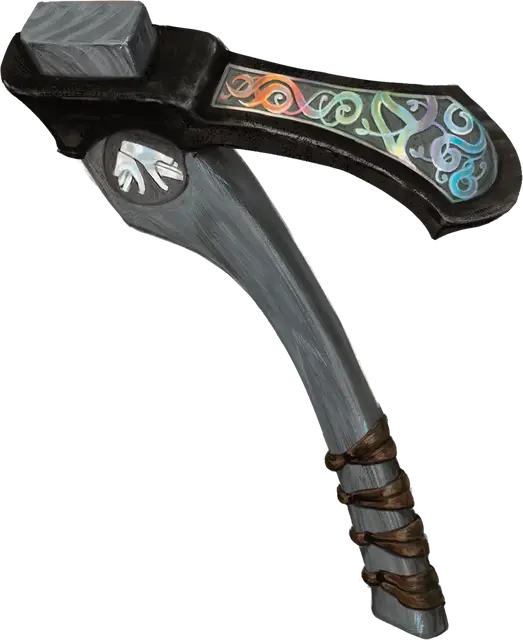

Тесло Аннама
Adze of Annam
Оружие (секира), артефакт (требуется настройка)

Считается, что этим массивным теслóм владел Всеотец Аннам, но не как оружием, а как инструментом, с помощью которого он много веков назад формировал различные миры Материального плана.
Случайные свойства. Теслó обладает следующими случайными свойствами, которые определяются броском по соответствующей таблице в статье «Артефакты» или в «Руководстве мастера»:
- 2 малых положительных свойства
- 1 основное положительное свойство
- 2 малых отрицательных свойства
Магическое оружие. Когда существо настраивается на теслó, артефакт магическим образом изменяет свой размер, так что существо может использовать его как секиру. Это магическое теслó даёт бонус +3 к броскам атаки и урона, совершённым этим магическим оружием. При попадании теслó наносит дополнительно 3к12 урона силовым полем. Оно также наносит удвоенный урон предметам и строениям.
Божественная Обработка. Действием вы можете призвать могущество Всеотца и использовать теслó чтобы наложить заклинания движение почвы [move earth] или изготовление [fabricate]. После использования этого свойства оно не может быть использовано снова до следующего рассвета.